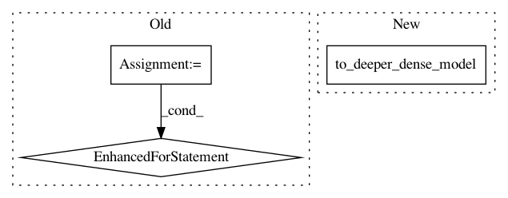

074d16ac217b9cddc04d093d019c61e393522eb5,autokeras/net_transformer.py,,transform,#Any#,110
Before Change
models.append(Sequential(copy_conv_model(conv_model), to_deeper_dense_model(dense_model, index)))
models.append(Sequential(copy_conv_model(conv_model), to_wider_dense_model(dense_model, index)))
for layer in conv_model.layers:
// search conv variation
if is_conv_layer(layer):
models.append(Sequential(to_deeper_conv_model(conv_model, layer), dense_model))
models.append(Sequential(to_wider_conv_model(conv_model, layer), dense_model))
models.append(Sequential(to_skip_connection_model(conv_model), dense_model))
return models
After Change
for index, layer in enumerate(model.layers):
if isinstance(layer, Dense):
models.append(to_deeper_dense_model(model, layer))
models.append(to_wider_dense_model(model, layer))
elif is_conv_layer(layer):
models.append(to_deeper_conv_model(model, layer))
In pattern: SUPERPATTERN
Frequency: 4
Non-data size: 3
Instances
Project Name: keras-team/autokeras
Commit Name: 074d16ac217b9cddc04d093d019c61e393522eb5
Time: 2017-12-30
Author: jhfjhfj1@gmail.com
File Name: autokeras/net_transformer.py
Class Name:
Method Name: transform
Project Name: keras-team/autokeras
Commit Name: 1cda66554188c4504aa94d1bcffd4cef9ee8a997
Time: 2017-12-28
Author: jhfjhfj1@gmail.com
File Name: autokeras/net_transformer.py
Class Name:
Method Name: transform